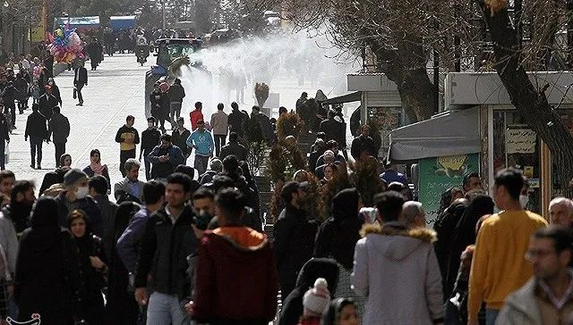

伊朗日增上千确诊病例，全国6万处清真寺取消周五礼拜
原文链接 备份链接 图片来源：Press TV “ 伊朗新增1234例新冠肺炎病例，累计确诊4747例。另据法新社报道，伊朗新增17例死亡病例，累计124例。 ” 伊朗卫生部3月6日宣布，自周四（5日）以来，该国新增1234例新冠肺炎病 …
图片来源：塔斯尼姆通讯社
记者：潘金花
“
“既然现在疫情已达顶峰，至少也应该在库姆和拉什特强制实施居家隔离，别让伊朗成为全球新冠肺炎死亡病例最多的国家。”
”
新冠肺炎疫情正在伊朗持续蔓延。据伊朗卫生部消息，截至5日上午，伊朗累计确诊病例数已升至3513例，其中107人死亡。
据阿拉比亚电视台网站5日报道，伊朗传染病专家、伊朗国家流感委员会委员马尔达尼（Masoud Mardani）表示，未来两周，首都德黑兰可能有多达40%的人感染新冠病毒。
伊朗本月20日将迎来波斯新年，首都德黑兰是伊朗最大城市，拥有超过900万人口。马尔达尼指出，新冠病毒传播的速度非常快，预计到新年前，德黑兰将约有30%至40%的人感染。
据新华社报道，伊朗卫生部已在5日宣布启动国家动员计划，加强防控新冠肺炎疫情。卫生部部长纳马基当天说，该计划将先在疫情严重地区开始实施，接下来几天内扩展至其他地区。
纳马基表示，根据该计划，疑似感染者将到医疗机构接受检测，检测结果为阳性的病例将被居家隔离，并收到药物和使用说明。该计划将包括伊朗全部城市、郊区和乡村的约1.7万个卫生中心以及9000个医疗和临床中心。
纳马基介绍说，本周用于新冠病毒检测的医疗机构已达22家，预计下周将达到40家。专业医务工作者将在疫情严重的城市出入口设立检测站。中小学和大学也将继续关闭至20日。纳马基还建议民众少用纸币，以降低感染风险。
但与此同时，伊朗政界的感染人数仍在不断增加，并再次出现了死亡病例。据阿拉比亚电视台网站5日报道，伊朗最高领袖顾问委员会成员、伊朗外长扎里夫的高级顾问萨德尔（Mohammad Sadr）已确诊感染，是该委员会感染的第二例确诊病例。
伊朗议员拉赫巴尔（Fatemeh Rahbar）则因感染病毒“病情危急”，拉赫巴尔上月刚在议会选举中连任。根据伊朗议会副议长梅斯里的说法，截至3日，在290名议员中，已有23人的病毒检测结果呈阳性。
伊朗外交部长扎里夫的前顾问、前驻叙利亚大使谢赫伊斯兰（Hossein Sheikholeslam）则因新冠肺炎，已在德黑兰的医院去世，距离他被披露感染仅过去了两天。伊朗最高领袖顾问委员会成员米尔穆罕默迪（Mohammad Mirmohammadi）本周早些时候也已去世。

伊朗外交部长扎里夫的前顾问、前驻叙利亚大使谢赫伊斯兰 来源：Twitter
此前，鉴于政府官员接连中招以及确诊病人的高死亡率，伊朗国内外已多次传来质疑声，怀疑政府瞒报实际感染人数。
伊朗议员侯赛因扎德（Abdolkarim Hosseinzadeh）4日说，在疫情最先爆发的圣城库姆，已经尸体“成堆”， 而在疫情同样严重的吉兰省首府拉什特，民众也已然“无助”，这无不说明政府“警告不及时”。
据美国有线电视新闻网（CNN）5日援引伊朗国家电视台IRIB报道，在一段据称拍摄于库姆市Behesht-e Masoumeh太平间的视频中，可以看到地上摆放着十几具装在黑色袋子里的尸体。太平间负责人称，目前还不确定这些尸体是否感染了新冠病毒，之所以没有下葬，是因为病毒检测需要一定的时间。
上述视频截图 来源：CNN
《华盛顿邮报》5日也援引由伊朗活动人士加里布（Nariman Gharib）提供的医院数据称，在截至4日的六天内，德黑兰的十几家医院已经报告了80例新冠肺炎死亡病例，而这些医院只是德黑兰医疗机构中的一小部分。还有多位来自德黑兰及马什哈德的护士告诉该报，官方数据未纳入的病例数正在增加。
伊朗议员侯赛因扎德认为，政府已是时候采取更严厉的措施。伊朗总统鲁哈尼曾在上周三（2月26日）表示，尽管新冠疫情在各地暴发，但政府没有计划对任何城镇实施卫生隔离，只会“隔离个人”。
侯赛因扎德4日在社交媒体上写道，“你们（指伊朗政府）之前没有隔离城市，但既然现在疫情已达顶峰，至少也应该在库姆和拉什特强制实施居家隔离，别让伊朗成为全球新冠肺炎死亡病例最多的国家。”

原文链接 备份链接 图片来源：Press TV “ 伊朗新增1234例新冠肺炎病例，累计确诊4747例。另据法新社报道，伊朗新增17例死亡病例，累计124例。 ” 伊朗卫生部3月6日宣布，自周四（5日）以来，该国新增1234例新冠肺炎病 …
原文链接 备份链接 随着新冠肺炎疫情的蔓延，在过去的一天，韩国、意大利、伊朗等多国新增确诊数继续上升，中国以外累计确诊病例超过15000例。 世卫组织：部分国家对新冠肺炎准备不足 当地时间3月5日，世卫组织在日内瓦召开新冠肺炎疫情例行发 …
原文链接 备份链接 【财新网】（记者 丁捷 综合）中国疫情得到有效控制，全球疫情持续蔓延。据世卫组织数据，截至欧洲时间3月4日，中国境外新冠肺炎超过100例的国家达9个，其中韩国确诊破5000例。过去24小时，全球新增确诊是中国15倍。与 …
原文链接 备份链接 3月2日，伊朗伊斯法罕Goltash公司的手部消毒凝胶生产线。图片来源：法尔斯通讯社 记者 ：潘金花 “ 伊朗司法部发言人称，若相关囤积走私案件被裁定涉及腐败，被告人或将面临最长20年的监禁，甚至死刑。 ” 77例死 …
原文链接 备份链接 图片来源：联合国新闻 记者：肖恩 “ 世卫组织称，世界正处于一个未知领域，但新冠肺炎在传播上不像流感，只要方法得当，完全有可能被遏制。 ” 新冠肺炎的蔓延开始呈现“全球化”趋势，覆盖六大洲超70国，中国以外累计确诊病例 …